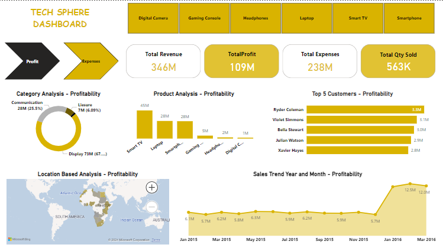
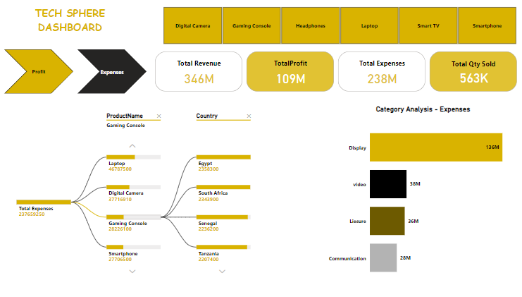

The business question
Where is profit concentrated, and which product and location combinations account for expenses? I focused on helping the reader move between the overall measures and the detail behind them.
Dashboard design
I used product selectors to give the report a consistent comparison context. The profit view includes category and product breakdowns, a location map, customer comparisons and a monthly trend.
The expense view shows category expenses and a decomposition of costs by product and country. This provides another route into the same reporting question without relying on a single headline total.
Dashboard views


How I would use the report
- Compare productsReview profit and expenses under the same product selection.
- Investigate locationsUse the map and country breakdown to identify areas for closer analysis.
- Check the time patternCompare monthly results before drawing conclusions from a single period.
Interpretation and scope
These are screenshots from an earlier Power BI project. They show the report design and displayed measures; the underlying model and source data are not published with this page.
Revenue, expenses and profit need consistent definitions and a reconciliation to the source data. The screenshots are portfolio outputs and are not presented as verified results from a client engagement.